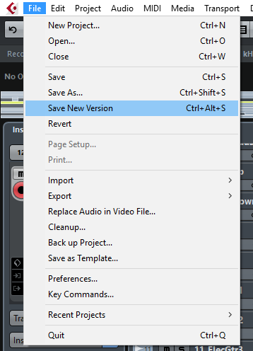

Keeping backups of your project will make sure that any unwanted change can be undone.
Two concepts that need to be understood are destructive and non-destructive editing of audio files. Non-destructive editing can be undone using the Undo function of Cubase. Destructive editing effects the actual contents of the audio file and cannot be undone. To ensure that all files are protected against unwanted changes it is important to copy the whole project folder.
Cubase has a New Version functiont that will create a new version of the project with a new name. It is good practice to create a new version on every major change you make.

Being able to keep previous versions of your work is a great way to store a scrapbook of old ideas and concepts. You may want to use a certain idea in a new project.
Storing versions can also be a good way of keeping evidence of your progress throughout your course.